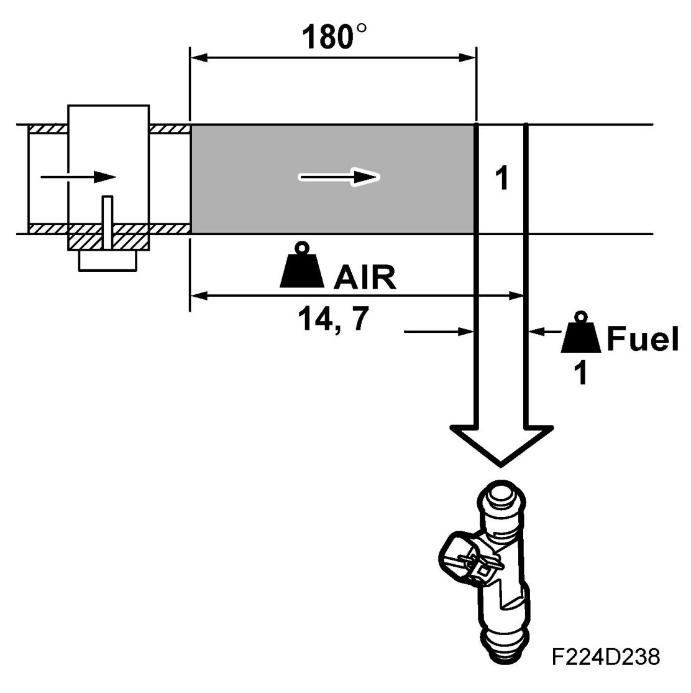
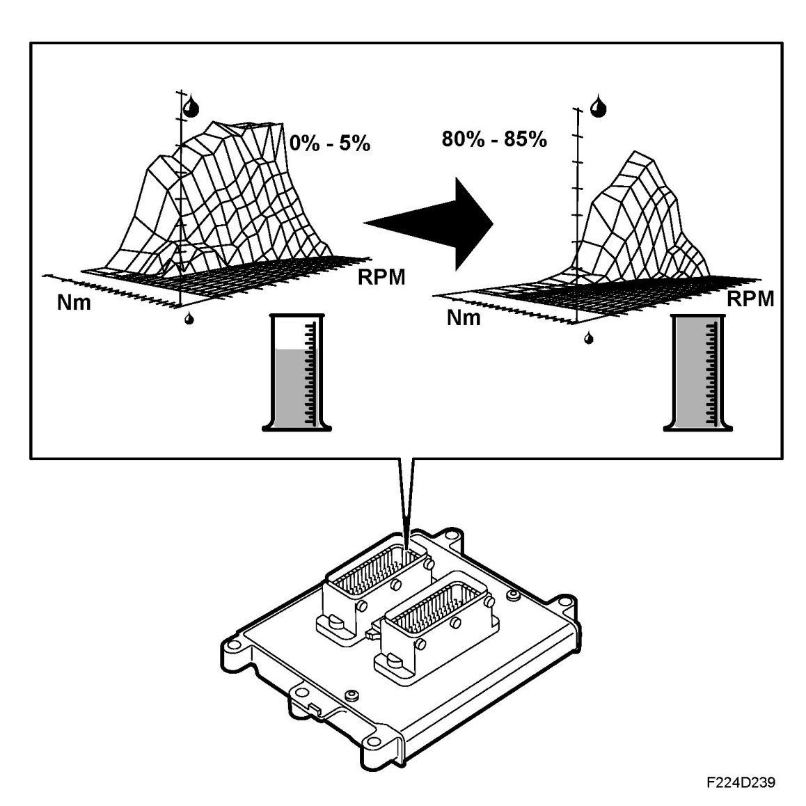

Basic Quantity, Fuel
Basic Quantity, Fuel

The mass air flow sensor grounds the control module input with a frequency that is dependent on the mass air flow. When the mass air flow increases, the frequency will also increase. The control module converts the frequency to grams air/second (g/s).
Most interesting, however, is the air mass that is drawn into each cylinder, as it is to this air the petrol is to be added. The control module registers the air mass drawn in during one engine revolution. As the engine is 4-cylinder 4-stroke, two cylinders must have drawn in air simultaneously during this engine revolution. The air mass passing the mass air flow sensor is divided by two so that the control module will be aware how much each cylinder has drawn in. The unit has now changed to milligrams air/combustion (mg/c).
To achieve lambda = 1, there must be a specific fuel/air ratio, namely 1 kg fuel to 14.7 kg air. As we know how much air has been drawn into each cylinder per combustion, the control module can easily calculate how much fuel is to be injected into the cylinders each time. The milligrams air/combustion is divided by 14.7 and the result is the number of mg fuel/combustion to be injected into the cylinder.
The following text is an account of why the basic fuel quantity must sometimes be adjusted to a leaner, or most often, a slightly richer mixture so that the engine will run smoothly and emissions will be kept within required limits.
E85
Due to the fact that more fuel is required with an ethanol mixture a further matrix has been added for the fuel quantity with E85 operation. With an adapted ethanol content of 0-5% the table for petrol operation is used, while at 80-85% the new table for E85 is used. With an ethanol content between 5-80% the torque varies steplessly between the two tables.

During E85 operation the engine runs within the lambda controlled (lambda 1) range up to high engine speeds, where the engine would otherwise request enrichment during operation on petrol. This means that the difference in fuel consumption between petrol operation and E85 operation decreases with high loads, where during petrol operation full load enrichment (lambda 1) must be applied to cool the engine.